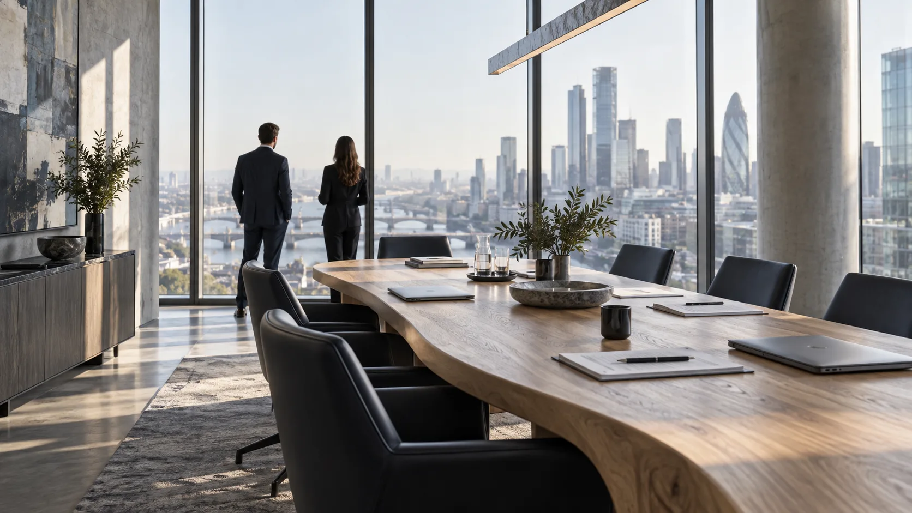

40ANNIVERSARY
1987–2027 / 仮設定
1987–2027 / 仮設定
PURPOSE社会の当たり前を、
社会の当たり前を、
明日の可能性に。
目立つ場所だけでなく、毎日の暮らしを支えるところに。TOWAは、インフラ・素材・ものづくりのつながりを大切にする架空企業です。
積み重ねた知見を未来へつなぐ姿勢を、企業情報とIR情報の両方から伝えるサイトを提案します。
私たちについて ↗

CONTACT
お問い合わせ ↗目立つ場所だけでなく、毎日の暮らしを支えるところに。TOWAは、インフラ・素材・ものづくりのつながりを大切にする架空企業です。
積み重ねた知見を未来へつなぐ姿勢を、企業情報とIR情報の両方から伝えるサイトを提案します。
私たちについて ↗